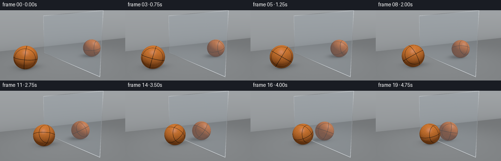
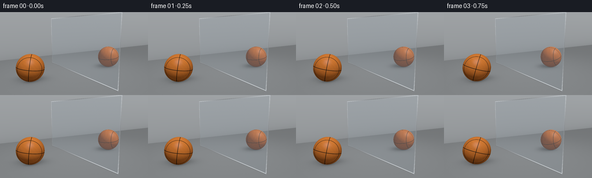

CODING AGENTS AS PIXEL WORLD MODELS
traex/GPT-6.1-Sol · phygen_064
点击播放 · 原生 RGB 像素
逐轮保存的候选
回放视频、检查图与代码变化。
每份候选均可单独播放。实际图片检查记录在下方工具轨迹中。
候选 01播放与检查图
点击播放 · 原生 RGB 像素


展开代码变化
--- 上一保存版本
+++ 本次保存版本
@@ -0,0 +1,207 @@
+"""Procedural studio shot: a basketball approaches a polished metal panel.
+All pixels are calculated locally from geometry, materials, and lighting.
+"""
+from pathlib import Path
+import json
+import numpy as np
+from PIL import Image
+import artifact_io
+
+ROOT = Path(__file__).resolve().parent
+SPEC = json.loads((ROOT / 'task_spec.json').read_text())
+W, H = SPEC['width'], SPEC['height']
+SS = 3
+SW, SH = W * SS, H * SS
+R = .68
+CAM = np.array([-5., 2.7, 7.5])
+TARGET = np.array([-.1, 1.15, 0.])
+LIGHT = np.array([-3.8, 6.4, 3.2])
+FORWARD = TARGET - CAM
+FORWARD /= np.linalg.norm(FORWARD)
+RIGHT = np.cross(FORWARD, [0, 1, 0])
+RIGHT /= np.linalg.norm(RIGHT)
+UP = np.cross(RIGHT, FORWARD)
+Y, X = np.mgrid[:SH, :SW]
+focal = SW / (2 * np.tan(np.deg2rad(25)))
+DIRS = FORWARD + ((X + .5 - SW / 2) / focal)[..., None] * RIGHT + ((SH / 2 - Y - .5) / focal)[..., None] * UP
+DIRS /= np.linalg.norm(DIRS, axis=-1, keepdims=True)
+DIRS = DIRS.reshape(-1, 3)
+
+
+def normalize(a):
+ return a / np.maximum(np.linalg.norm(a, axis=-1, keepdims=True), 1e-10)
+
+
+def sphere_hit(o, d, center):
+ oc = o - center
+ b = np.sum(oc * d, axis=-1)
+ c = np.sum(oc * oc, axis=-1) - R * R
+ disc = b * b - c
+ t = -b - np.sqrt(np.maximum(disc, 0))
+ return np.where((disc > 0) & (t > .0001), t, np.inf)
+
+
+def leather(n, angle):
+ # Rotation around the ground-contact axis gives actual forward rolling.
+ ca, sa = np.cos(angle), np.sin(angle)
+ q = n.copy()
+ q[:, 0] = ca * n[:, 0] + sa * n[:, 1]
+ q[:, 1] = -sa * n[:, 0] + ca * n[:, 1]
+ # Give the seam arrangement an attractive, asymmetric initial orientation.
+ a = .42
+ xx = q[:, 0] * np.cos(a) + q[:, 2] * np.sin(a)
+ zz = -q[:, 0] * np.sin(a) + q[:, 2] * np.cos(a)
+ yy = q[:, 1]
+ # Four continuous recessed grooves, including the characteristic bowed pair.
+ seam = np.minimum(np.abs(xx), np.abs(yy))
+ seam = np.minimum(seam, np.abs(zz - .57) / .83)
+ seam = np.minimum(seam, np.abs(zz + .57) / .83)
+ phi = np.arctan2(zz, xx)
+ theta = np.arccos(np.clip(yy, -1, 1))
+ rows = theta * (78 / np.pi)
+ row = np.floor(rows)
+ # A staggered pebble pattern embedded into the orange leather, not screen noise.
+ cols = phi * (154 / (2 * np.pi)) + .5 * (row % 2)
+ fx = cols - np.floor(cols) - .5
+ fy = rows - row - .5
+ jitter = .1 * np.sin(row * 12.1 + np.floor(cols) * 8.73)
+ dot = np.exp(-((fx + jitter) ** 2 / .115 + (fy - jitter) ** 2 / .16) * 1.7)
+ grain = .88 + .17 * dot + .022 * np.sin(q[:, 0] * 171 + np.sin(q[:, 2] * 114))
+ variation = 1 + .035 * np.sin(xx * 13 + yy * 21) * np.sin(zz * 18 - xx * 5)
+ orange = np.array([.63, .173, .028])[None, :] * (grain * variation)[:, None]
+ grooves = 1 - np.clip((seam - .009) / .012, 0, 1)
+ rubber = np.array([.009, .0075, .0055])[None, :] * (1 + .2 * dot[:, None])
+ color = orange * (1 - grooves[:, None]) + rubber * grooves[:, None]
+ # A subtle raised orange rim catches the light alongside the dark channels.
+ rim = .035 * np.exp(-((seam - .026) / .006) ** 2)
+ color += rim[:, None] * np.array([.5, .19, .04])
+ return color, grooves, dot
+
+
+def environment(d):
+ amount = np.clip(d[:, 1] * .5 + .5, 0, 1)
+ c = np.array([.33, .36, .39]) + amount[:, None] * np.array([.28, .28, .27])
+ # Broad softboxes reflected in the upper part of the metal.
+ l = normalize(np.array([[-.5, .8, .1]]))[0]
+ strength = np.exp(-((d @ l - 1) / .095) ** 2)
+ return c + strength[:, None] * .42
+
+
+def floor_color(p, center):
+ # Matte, fine-grained studio floor with only restrained surface variation.
+ x, z = p[:, 0], p[:, 2]
+ distance = np.sqrt(x * x + z * z)
+ base = np.tile(np.array([.255, .269, .278]), (len(p), 1))
+ illum = .72 + .28 * np.exp(-distance ** 2 / 35)
+ grain = .003 * np.sin(x * 139 + z * 81) * np.sin(z * 117 - x * 93)
+ base *= illum[:, None]
+ base += grain[:, None]
+ # Soft area-light shadow, elongated naturally away from the source.
+ shift = (center - LIGHT) * R / (LIGHT[1] - R)
+ sc = center + shift
+ dx, dz = x - sc[0], z - sc[2]
+ a = (dx * .84 + dz * .54) / .90
+ b = (-dx * .54 + dz * .84) / .62
+ cast = .49 * np.exp(-1.8 * (a*a + b*b))
+ dx, dz = x - center[0], z - center[2]
+ contact = .72 * np.exp(-((dx / .40) ** 2 + (dz / .33) ** 2) * 2)
+ wide = .15 * np.exp(-((dx / .9) ** 2 + (dz / .72) ** 2) * 1.5)
+ # The panel meets the floor, producing a narrow contact-darkening line.
+ edge = .18 * np.exp(-np.abs(x) * 28) * ((z > -3.15) & (z < 3.25))
+ shade = (1 - cast) * (1 - contact) * (1 - wide) * (1 - edge)
+ return base * shade[:, None]
+
+
+def ball_color(p, d, center, angle):
+ n = normalize(p - center)
+ color, grooves, dots = leather(n, angle)
+ l = normalize(LIGHT - p)
+ diffuse = np.maximum(np.sum(n * l, axis=1), 0)
+ fill = np.maximum(n @ normalize(np.array([[3., 2., 4.]]))[0], 0)
+ ambient = .20 + .10 * np.maximum(n[:, 1], 0)
+ color *= (ambient + .88 * diffuse + .15 * fill)[:, None]
+ half = normalize(l - d)
+ spec = np.maximum(np.sum(n * half, axis=1), 0) ** 38
+ color += spec[:, None] * (.07 + .045 * dots[:, None]) * (1 - grooves[:, None] * .8)
+ # Contact ambient occlusion at the bottom of the ball.
+ color *= (.80 + .20 * np.clip((p[:, 1] / R) * 2, 0, 1))[:, None]
+ return color
+
+
+def room(o, d, center, angle):
+ n = len(d)
+ o = np.broadcast_to(o, (n, 3))
+ color = environment(d)
+ tf = np.where(d[:, 1] < -1e-8, -o[:, 1] / np.minimum(d[:, 1], -1e-8), np.inf)
+ tw = np.where(d[:, 2] < -1e-8, (-6 - o[:, 2]) / np.minimum(d[:, 2], -1e-8), np.inf)
+ tb = sphere_hit(o, d, center)
+ nearest = np.minimum(tf, np.minimum(tw, tb))
+ isfloor = (tf == nearest) & np.isfinite(tf)
+ if np.any(isfloor):
+ p = o[isfloor] + d[isfloor] * tf[isfloor, None]
+ color[isfloor] = floor_color(p, center)
+ iswall = (tw == nearest) & np.isfinite(tw)
+ if np.any(iswall):
+ p = o[iswall] + d[iswall] * tw[iswall, None]
+ grad = .85 + .15 * np.clip(p[:, 1] / 4, 0, 1)
+ wall = np.array([.37, .391, .406])[None, :] * grad[:, None]
+ # Seamless cyclorama-style wall/floor soft junction.
+ wall *= (1 - .13 * np.exp(-np.maximum(p[:, 1], 0) * 2))[:, None]
+ color[iswall] = wall
+ isball = (tb == nearest) & np.isfinite(tb)
+ if np.any(isball):
+ p = o[isball] + d[isball] * tb[isball, None]
+ color[isball] = ball_color(p, d[isball], center, angle)
+ return color, nearest
+
+
+def render(i):
+ t = i / (SPEC['frames'] - 1)
+ # Smooth acceleration and braking, with no bounce or sudden discontinuity.
+ s = t * t * (3 - 2 * t)
+ center = np.array([-2.65 + 1.89 * s, R, 0.])
+ angle = -.15 - (center[0] + 2.65) / R
+ color, near = room(CAM, DIRS, center, angle)
+ # The metal's front face is the plane x = 0. Its reflected rays trace
+ # exactly the same sphere and room, enforcing synchronized mirror motion.
+ tx = np.where(DIRS[:, 0] > 1e-8, -CAM[0] / np.maximum(DIRS[:, 0], 1e-8), np.inf)
+ p = CAM + DIRS * np.where(np.isfinite(tx), tx, 0)[:, None]
+ onpanel = (tx < near) & (p[:, 1] >= 0) & (p[:, 1] <= 3.25) & (p[:, 2] >= -3.15) & (p[:, 2] <= 3.25)
+ if np.any(onpanel):
+ hit = p[onpanel]
+ incoming = DIRS[onpanel]
+ reflected = incoming.copy()
+ reflected[:, 0] *= -1
+ rc, _ = room(hit + reflected * 1e-4, reflected, center, angle)
+ # Highly polished silver, not a transparent window. Extremely subtle
+ # brushing and silver absorption preserve a crisp, useful reflection.
+ fresnel = .88 + .10 * (1 - np.abs(incoming[:, 0])) ** 5
+ metal = rc * np.array([.94, .965, .985])[None, :] * fresnel[:, None]
+ metal += np.array([.055, .062, .068])[None, :]
+ brush = .0015 * np.sin(hit[:, 1] * 2800 + np.sin(hit[:, 2] * 11))
+ metal += brush[:, None]
+ margin = np.minimum.reduce([hit[:, 1], 3.25 - hit[:, 1], hit[:, 2] + 3.15, 3.25 - hit[:, 2]])
+ # A narrow machined bevel visibly identifies the metal sheet boundary.
+ bevel = margin < .034
+ if np.any(bevel):
+ shine = .50 + .22 * np.sin(hit[bevel, 2] * .75 + hit[bevel, 1] * 1.4)
+ metal[bevel] = shine[:, None] * np.array([.89, .95, 1.0])[None, :]
+ fine = np.exp(-((margin - .039) / .007) ** 2) * .06
+ metal += fine[:, None]
+ color[onpanel] = metal
+ # Gentle photographic tone curve, linear-light rendering to RGB output.
+ color = np.maximum(color, 0)
+ color = color / (1 + .19 * color)
+ rgb = np.where(color <= .0031308, 12.92 * color, 1.055 * color ** (1 / 2.4) - .055)
+ rgb = np.clip(rgb.reshape(SH, SW, 3) * 255, 0, 255).astype(np.uint8)
+ return np.asarray(Image.fromarray(rgb).resize((W, H), Image.Resampling.LANCZOS))
+
+
+def main():
+ frames = np.stack([render(i) for i in range(SPEC['frames'])])
+ artifact_io.save(frames, ROOT)
+ print(f'Saved {len(frames)} RGB frames, {W}x{H}, {SPEC["fps"]} fps to {ROOT}')
+
+
+if __name__ == '__main__':
+ main()
可观测工具轨迹
实际执行的命令与返回图片。
命令 1exit 0
/bin/bash -lc 'ls -la && cat prompt.txt && cat GENERATION_RULES.md && cat task_spec.json'
命令 2exit 0
/bin/bash -lc "cat artifact_io.py && python - <<'PY'
import numpy, PIL
print('numpy/PIL available')
PY"命令 3exit 0
/bin/bash -lc "python - <<'PY'
import numpy as np
C=np.array([-5.,2.7,7.5]);T=np.array([-.1,1.15,0.]);f=(T-C)/np.linalg.norm(T-C);r=np.cross(f,[0,1,0]);r/=np.linalg.norm(r);u=np.cross(r,f)
for name,p in [('ball first',[-2.65,.68,0]),('ball last',[-.76,.68,0]),('reflection first',[2.65,.68,0]),('reflection last',[.76,.68,0]),('panel edge low',[0,0,-3]),('panel edge top',[0,4,-3]),('panel near',[0,0,4])]:
d=np.array(p)-C
scale=128/np.tan(np.deg2rad(25))
print(name,[128+scale*d@r/(d@f),72-scale*d@u/(d@f)],'radius',scale*.68/(d@f))
PY"命令 4exit 0
/bin/bash -lc "cat > generate.py <<'PY'
\"\"\"Procedural studio shot: a basketball approaches a polished metal panel.
All pixels are calculated locally from geometry, materials, and lighting.
\"\"\"
from pathlib import Path
import json
import numpy as np
from PIL import Image
import artifact_io
ROOT = Path(__file__).resolve().parent
SPEC = json.loads((ROOT / 'task_spec.json').read_text())
W, H = SPEC['width'], SPEC['height']
SS = 3
SW, SH = W * SS, H * SS
R = .68
CAM = np.array([-5., 2.7, 7.5])
TARGET = np.array([-.1, 1.15, 0.])
LIGHT = np.array([-3.8, 6.4, 3.2])
FORWARD = TARGET - CAM
FORWARD /= np.linalg.norm(FORWARD)
RIGHT = np.cross(FORWARD, [0, 1, 0])
RIGHT /= np.linalg.norm(RIGHT)
UP = np.cross(RIGHT, FORWARD)
Y, X = np.mgrid[:SH, :SW]
focal = SW / (2 * np.tan(np.deg2rad(25)))
DIRS = FORWARD + ((X + .5 - SW / 2) / focal)[..., None] * RIGHT + ((SH / 2 - Y - .5) / focal)[..., None] * UP
DIRS /= np.linalg.norm(DIRS, axis=-1, keepdims=True)
DIRS = DIRS.reshape(-1, 3)
def normalize(a):
return a / np.maximum(np.linalg.norm(a, axis=-1, keepdims=True), 1e-10)
def sphere_hit(o, d, center):
oc = o - center
b = np.sum(oc * d, axis=-1)
c = np.sum(oc * oc, axis=-1) - R * R
disc = b * b - c
t = -b - np.sqrt(np.maximum(disc, 0))
return np.where((disc > 0) & (t > .0001), t, np.inf)
def leather(n, angle):
# Rotation around the ground-contact axis gives actual forward rolling.
ca, sa = np.cos(angle), np.sin(angle)
q = n.copy()
q[:, 0] = ca * n[:, 0] + sa * n[:, 1]
q[:, 1] = -sa * n[:, 0] + ca * n[:, 1]
# Give the seam arrangement an attractive, asymmetric initial orientation.
a = .42
xx = q[:, 0] * np.cos(a) + q[:, 2] * np.sin(a)
zz = -q[:, 0] * np.sin(a) + q[:, 2] * np.cos(a)
yy = q[:, 1]
# Four continuous recessed grooves, including the characteristic bowed pair.
seam = np.minimum(np.abs(xx), np.abs(yy))
seam = np.minimum(seam, np.abs(zz - .57) / .83)
seam = np.minimum(seam, np.abs(zz + .57) / .83)
phi = np.arctan2(zz, xx)
theta = np.arccos(np.clip(yy, -1, 1))
rows = theta * (78 / np.pi)
row = np.floor(rows)
# A staggered pebble pattern embedded into the orange leather, not screen noise.
cols = phi * (154 / (2 * np.pi)) + .5 * (row % 2)
fx = cols - np.floor(cols) - .5
fy = rows - row - .5
jitter = .1 * np.sin(row * 12.1 + np.floor(cols) * 8.73)
dot = np.exp(-((fx + jitter) ** 2 / .115 + (fy - jitter) ** 2 / .16) * 1.7)
grain = .88 + .17 * dot + .022 * np.sin(q[:, 0] * 171 + np.sin(q[:, 2] * 114))
variation = 1 + .035 * np.sin(xx * 13 + yy * 21) * np.sin(zz * 18 - xx * 5)
orange = np.array([.63, .173, .028])[None, :] * (grain * variation)[:, None]
grooves = 1 - np.clip((seam - .009) / .012, 0, 1)
rubber = np.array([.009, .0075, .0055])[None, :] * (1 + .2 * dot[:, None])
color = orange * (1 - grooves[:, None]) + rubber * grooves[:, None]
# A subtle raised orange rim catches the light alongside the dark channels.
rim = .035 * np.exp(-((seam - .026) / .006) ** 2)
color += rim[:, None] * np.array([.5, .19, .04])
return color, grooves, dot
def environment(d):
amount = np.clip(d[:, 1] * .5 + .5, 0, 1)
c = np.array([.33, .36, .39]) + amount[:, None] * np.array([.28, .28, .27])
# Broad softboxes reflected in the upper part of the metal.
l = normalize(np.array([[-.5, .8, .1]]))[0]
strength = np.exp(-((d @ l - 1) / .095) ** 2)
return c + strength[:, None] * .42
def floor_color(p, center):
# Matte, fine-grained studio floor with only restrained surface variation.
x, z = p[:, 0], p[:, 2]
distance = np.sqrt(x * x + z * z)
base = np.tile(np.array([.255, .269, .278]), (len(p), 1))
illum = .72 + .28 * np.exp(-distance ** 2 / 35)
grain = .003 * np.sin(x * 139 + z * 81) * np.sin(z * 117 - x * 93)
base *= illum[:, None]
base += grain[:, None]
# Soft area-light shadow, elongated naturally away from the source.
shift = (center - LIGHT) * R / (LIGHT[1] - R)
sc = center + shift
dx, dz = x - sc[0], z - sc[2]
a = (dx * .84 + dz * .54) / .90
b = (-dx * .54 + dz * .84) / .62
cast = .49 * np.exp(-1.8 * (a*a + b*b))
dx, dz = x - center[0], z - center[2]
contact = .72 * np.exp(-((dx / .40) ** 2 + (dz / .33) ** 2) * 2)
wide = .15 * np.exp(-((dx / .9) ** 2 + (dz / .72) ** 2) * 1.5)
# The panel meets the floor, producing a narrow contact-darkening line.
edge = .18 * np.exp(-np.abs(x) * 28) * ((z > -3.15) & (z < 3.25))
shade = (1 - cast) * (1 - contact) * (1 - wide) * (1 - edge)
return base * shade[:, None]
def ball_color(p, d, center, angle):
n = normalize(p - center)
color, grooves, dots = leather(n, angle)
l = normalize(LIGHT - p)
diffuse = np.maximum(np.sum(n * l, axis=1), 0)
fill = np.maximum(n @ normalize(np.array([[3., 2., 4.]]))[0], 0)
ambient = .20 + .10 * np.maximum(n[:, 1], 0)
color *= (ambient + .88 * diffuse + .15 * fill)[:, None]
half = normalize(l - d)
spec = np.maximum(np.sum(n * half, axis=1), 0) ** 38
color += spec[:, None] * (.07 + .045 * dots[:, None]) * (1 - grooves[:, None] * .8)
# Contact ambient occlusion at the bottom of the ball.
color *= (.80 + .20 * np.clip((p[:, 1] / R) * 2, 0, 1))[:, None]
return color
def room(o, d, center, angle):
n = len(d)
o = np.broadcast_to(o, (n, 3))
color = environment(d)
tf = np.where(d[:, 1] < -1e-8, -o[:, 1] / np.minimum(d[:, 1], -1e-8), np.inf)
tw = np.where(d[:, 2] < -1e-8, (-6 - o[:, 2]) / np.minimum(d[:, 2], -1e-8), np.inf)
tb = sphere_hit(o, d, center)
nearest = np.minimum(tf, np.minimum(tw, tb))
isfloor = (tf == nearest) & np.isfinite(tf)
if np.any(isfloor):
p = o[isfloor] + d[isfloor] * tf[isfloor, None]
color[isfloor] = floor_color(p, center)
iswall = (tw == nearest) & np.isfinite(tw)
if np.any(iswall):
p = o[iswall] + d[iswall] * tw[iswall, None]
grad = .85 + .15 * np.clip(p[:, 1] / 4, 0, 1)
wall = np.array([.37, .391, .406])[None, :] * grad[:, None]
# Seamless cyclorama-style wall/floor soft junction.
wall *= (1 - .13 * np.exp(-np.maximum(p[:, 1], 0) * 2))[:, None]
color[iswall] = wall
isball = (tb == nearest) & np.isfinite(tb)
if np.any(isball):
p = o[isball] + d[isball] * tb[isball, None]
color[isball] = ball_color(p, d[isball], center, angle)
return color, nearest
def render(i):
t = i / (SPEC['frames'] - 1)
# Smooth acceleration and braking, with no bounce or sudden discontinuity.
s = t * t * (3 - 2 * t)
center = np.array([-2.65 + 1.89 * s, R, 0.])
angle = -.15 - (center[0] + 2.65) / R
color, near = room(CAM, DIRS, center, angle)
# The metal's front face is the plane x = 0. Its reflected rays trace
# exactly the same sphere and room, enforcing synchronized mirror motion.
tx = np.where(DIRS[:, 0] > 1e-8, -CAM[0] / np.maximum(DIRS[:, 0], 1e-8), np.inf)
p = CAM + DIRS * np.where(np.isfinite(tx), tx, 0)[:, None]
onpanel = (tx < near) & (p[:, 1] >= 0) & (p[:, 1] <= 3.25) & (p[:, 2] >= -3.15) & (p[:, 2] <= 3.25)
if np.any(onpanel):
hit = p[onpanel]
incoming = DIRS[onpanel]
reflected = incoming.copy()
reflected[:, 0] *= -1
rc, _ = room(hit + reflected * 1e-4, reflected, center, angle)
# Highly polished silver, not a transparent window. Extremely subtle
# brushing and silver absorption preserve a crisp, useful reflection.
fresnel = .88 + .10 * (1 - np.abs(incoming[:, 0])) ** 5
metal = rc * np.array([.94, .965, .985])[None, :] * fresnel[:, None]
metal += np.array([.055, .062, .068])[None, :]
brush = .0015 * np.sin(hit[:, 1] * 2800 + np.sin(hit[:, 2] * 11))
metal += brush[:, None]
margin = np.minimum.reduce([hit[:, 1], 3.25 - hit[:, 1], hit[:, 2] + 3.15, 3.25 - hit[:, 2]])
# A narrow machined bevel visibly identifies the metal sheet boundary.
bevel = margin < .034
if np.any(bevel):
shine = .50 + .22 * np.sin(hit[bevel, 2] * .75 + hit[bevel, 1] * 1.4)
metal[bevel] = shine[:, None] * np.array([.89, .95, 1.0])[None, :]
fine = np.exp(-((margin - .039) / .007) ** 2) * .06
metal += fine[:, None]
color[onpanel] = metal
# Gentle photographic tone curve, linear-light rendering to RGB output.
color = np.maximum(color, 0)
color = color / (1 + .19 * color)
rgb = np.where(color <= .0031308, 12.92 * color, 1.055 * color ** (1 / 2.4) - .055)
rgb = np.clip(rgb.reshape(SH, SW, 3) * 255, 0, 255).astype(np.uint8)
return np.asarray(Image.fromarray(rgb).resize((W, H), Image.Resampling.LANCZOS))
def main():
frames = np.stack([render(i) for i in range(SPEC['frames'])])
artifact_io.save(frames, ROOT)
print(f'Saved {len(frames)} RGB frames, {W}x{H}, {SPEC[\"fps\"]} fps to {ROOT}')
if __name__ == '__main__':
main()
PY
python generate.py"命令 5exit 0
/bin/bash -lc "python - <<'PY'
import numpy as np
from pathlib import Path
from PIL import Image
p=Path('.')
a=np.load(p/'pixels.npz')['pixels']
assert a.shape==(144,256,20)
assert len(list((p/'frames').glob('*.png')))==20
for i in (0,19):
im=np.array(Image.open(p/'frames'/f'{i:02d}.png'))
orange=(im[:,:,0]>1.28*im[:,:,1])&(im[:,:,1]>1.3*im[:,:,2])&(im[:,:,0]>65)
ys,xs=np.where(orange)
left=xs<130
print(i, 'orange pixel bounds:',(xs.min(),ys.min(),xs.max(),ys.max()),'left/right centers',xs[left].mean(),xs[~left].mean())
print('Output validated.')
PY
command -v ffmpeg || true
ls -lh pixels.npz index.html inspection.png generate.py"保存候选 1 份；完成命令 5 次；可验证图片返回 0 张。原始 API 响应与完整日志保留在本地。